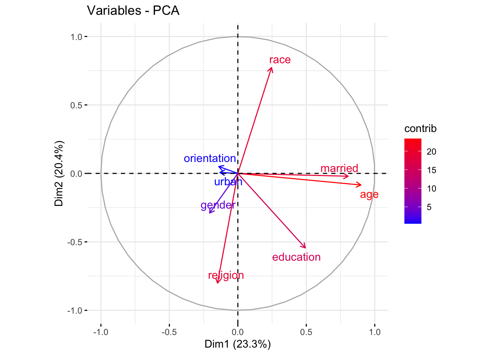

Statistical Analysis
dass_raw = read.csv("./data/data.csv", sep = "\t")
dass = dass_raw %>%
filter(!(VCL6 == 1 | VCL9 == 1 | VCL12 == 1)) %>%
filter(!country == "NONE") %>%
filter(age <= 100)
dass = dass %>%
dplyr::select(matches('Q\\d+A'), country, education, urban, gender, age, religion, orientation, race, married) %>%
na.omit()# Select the columns you need and create a data frame
dass_heat1 <- dass %>%
dplyr::select(-matches('Q\\d+A')) %>%
dplyr::select(-country)
# Calculate the correlation matrix
r <- cor(dass_heat1,
method = "pearson",
use = "pairwise.complete.obs"
)
pheatmap(r,
show_colnames = TRUE,
show_rownames=TRUE,
fontsize=5,
color = colorRampPalette(c('#0000ff','#ffffff','#ff0000'))(100),
annotation_legend=TRUE,
border_color=NA,
scale="none",
cluster_rows = T,
cluster_cols = T
)
PCA = prcomp(dass_heat1, center = T, scale. = T)
PCA## Standard deviations (1, .., p=8):
## [1] 1.3644747 1.2766075 1.0367275 0.9957232 0.9376937 0.8492498 0.7237589
## [8] 0.5638192
##
## Rotation (n x k) = (8 x 8):
## PC1 PC2 PC3 PC4 PC5
## education 0.36115304 -0.426199331 -0.039032188 -0.03434643 -0.20396151
## urban -0.09590985 0.005416019 -0.180481735 -0.97388998 -0.07920193
## gender -0.15105892 -0.226868602 0.588713727 -0.16174923 0.70915519
## age 0.65876562 -0.066385747 0.056117873 -0.06872801 -0.01022743
## religion -0.10869187 -0.627705234 0.001323761 0.05738545 -0.05176044
## orientation -0.10219791 0.039512464 0.751148598 -0.07792224 -0.64121312
## race 0.18042073 0.605485835 0.157616650 -0.02164502 0.11389524
## married 0.59056656 -0.016129939 0.164623169 -0.09817739 0.14938388
## PC6 PC7 PC8
## education 0.73315866 -0.04086967 -0.323151938
## urban -0.02606578 -0.05209002 0.008418646
## gender 0.19918666 0.07252278 0.071618518
## age -0.03742076 0.02498869 0.742710363
## religion -0.33884956 -0.68614680 0.050811208
## orientation -0.05841775 0.05342668 0.016641983
## race 0.22600153 -0.71034614 -0.082965654
## married -0.50141297 0.10718600 -0.573595696summary(PCA)## Importance of components:
## PC1 PC2 PC3 PC4 PC5 PC6 PC7
## Standard deviation 1.3645 1.2766 1.0367 0.9957 0.9377 0.84925 0.72376
## Proportion of Variance 0.2327 0.2037 0.1343 0.1239 0.1099 0.09015 0.06548
## Cumulative Proportion 0.2327 0.4364 0.5708 0.6947 0.8046 0.89479 0.96026
## PC8
## Standard deviation 0.56382
## Proportion of Variance 0.03974
## Cumulative Proportion 1.00000screeplot(PCA, type = 'line')
library(factoextra)## Welcome! Want to learn more? See two factoextra-related books at https://goo.gl/ve3WBafviz_pca_var(PCA, axes = c(1, 2), col.var = "contrib", gradient.cols = c("blue", "red"), repel = TRUE)
fviz_pca_var(PCA, axes = c(2, 3), col.var = "contrib", gradient.cols = c("blue", "red"),
repel = TRUE)